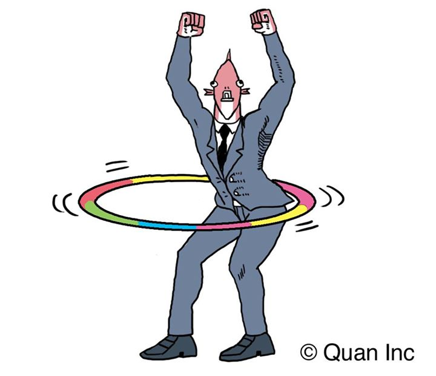

Learn to Code with
Week 3
Eoin Houlihan
Thank you!
Lots of really good code sent to me last week!
I didn't just copy this slide over from last week...
Functions in Ruby
We've already been using functions like gets and puts
Functions let us package up reusable bits of code
Also give us meaningful names to sections of code much like variables give us meaningful names for our data
Defining our own functions
Functions are defined using the def keyword
Their lists of arguments are put in parantheses
MONTHS = ["Jan", "Feb", "Mar", "Apr", "May", "Jun",
"Jul", "Aug", "Sep", "Oct", "Nov", "Dec"]
def number_to_month(number)
MONTHS[number - 1]
end
def is_even?(number)
return number % 2 == 0
end
puts is_even? 5
# false
puts(is_even?(6))
# true
puts number_to_month 11
# Nov
As you can see the parantheses are optional in some cases
Combining functions
We've seen before how we can chain multiple functions in one line
def is_even?(number)
return number % 2 == 0
end
puts "Enter a value to see if it is even"
puts(is_even?(gets().chomp().to_i()))
Solution To Last Week's Problem
We'll take a look at a solution to the date converter program from last week.
The code has been written to take advantage of functions
Available to download on the sample code page
Exercise Time
Let's write a function
Default Arguments
We can provide a default value for an argument
Lets us call the function without providing a value for that argument
def greet(greeting, name="John")
puts "#{greeting} #{name}"
end
greet("Hello")
# Hello John
greet("Hi", "Mary")
# Hi Mary
Recursive functions
Functions can also call themselves
Our Fibonacci example from the first week
def fibonacci(n)
return n if (0..1).include? n
fibonacci(n - 1) + fibonacci(n - 2)
end
puts fibonacci(10)
Read up on recursive functions if you're feeling adventurous
Your task for next week
#TODO
Any questions, email me! ehoulih@tcd.ie
See you next week!
Slides are available online -> https://houli.github.io/slides
